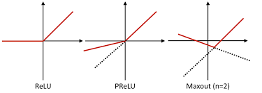
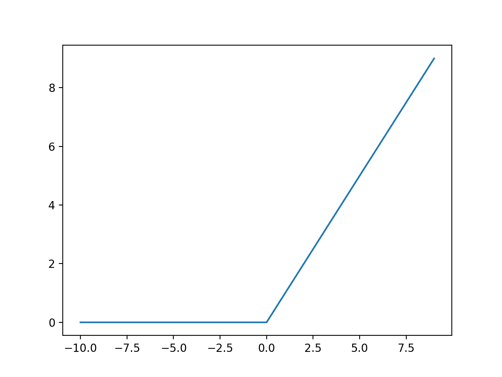
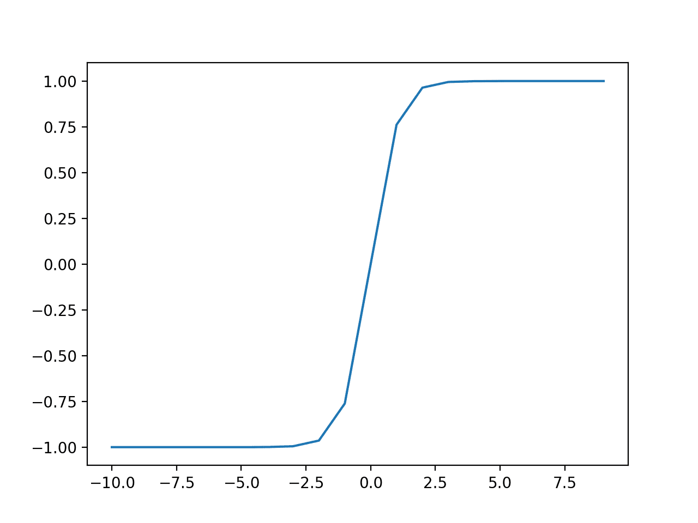

8 RED NEURONAL
8.1 Separación de datos
- Para iniciar con la predicción se importan los datos escalados en el apartado anterior.
DfPrestamosNormalizadoN<-read.csv('DfPrestamosNormalizado.csv')
DfPrestamosNormalizadoN<- DfPrestamosNormalizadoN %>% select( -X)
DfPrestamosNormalizadoN$CalificacionPrestamo <- as.factor(DfPrestamosNormalizadoN$CalificacionPrestamo)- Se separan datos para entrenamiento y para test.
split <- sample.split(DfPrestamosNormalizadoN$CalificacionPrestamo, SplitRatio = 0.80)
training_set <- subset(DfPrestamosNormalizadoN, split == TRUE)
test_set <- subset(DfPrestamosNormalizadoN, split == FALSE)Se toma el 80% de los datos para entrenamiento y el 20% para test.
Datos Entrenamiento:
Total de columnas : 68
Total de filas : 418
Total préstamos con calificación 0 - Total préstamos con calificación 1: 100, 318
Datos Test:
Total de columnas : 68
Total de filas : 105
Total préstamos con calificación 0 - Total préstamos con calificación 1: 25, 80
8.2 Entrenamiento
Para la implementación de la red neuronal se utiliza el paquete H2O, el cual es una librería para análisis predictivo y machine learning que incorpora funciones para crear redes neuronales artificiales así como modelos de deep learning.
En primer lugar, es necesario inicializarla:
h2o.init(nthreads = -1)## Connection successful!
##
## R is connected to the H2O cluster:
## H2O cluster uptime: 40 minutes 26 seconds
## H2O cluster timezone: America/Argentina/Buenos_Aires
## H2O data parsing timezone: UTC
## H2O cluster version: 3.32.1.3
## H2O cluster version age: 1 month and 21 days
## H2O cluster name: H2O_started_from_R_Francisco_Palacio_cfz252
## H2O cluster total nodes: 1
## H2O cluster total memory: 3.93 GB
## H2O cluster total cores: 8
## H2O cluster allowed cores: 8
## H2O cluster healthy: TRUE
## H2O Connection ip: localhost
## H2O Connection port: 54321
## H2O Connection proxy: NA
## H2O Internal Security: FALSE
## H2O API Extensions: Amazon S3, Algos, AutoML, Core V3, TargetEncoder, Core V4
## R Version: R version 4.0.5 (2021-03-31)Una vez inicializada, se crea el objeto clasificador haciendo uso de la función h2o.deeplearning (se observa el progreso de entrenamiento mientras se ejecuta):
Se crean tres redes neuronales las cuales se distinguen según su función de activación, luego de esto se comparan y se elige la que mejor resultado tenga.
8.2.1 Función de activación
Funciones de activación: en una red neuronal, la función de activación es responsable de transformar la entrada ponderada, sumada al nodo en su activación como salida.
*Maxout: la Unidad Maxout es una generalización de ReLU y las funciones de ReLU con fugas . Es una función lineal por partes que devuelve el máximo de las entradas, diseñada para usarse junto con la deserción.
*Rectifier: la función de activación lineal rectificada o ReLU para abreviar es una función lineal por partes que generará la entrada directamente si es positiva; de lo contrario, generará cero. Se ha convertido en la función de activación predeterminada para muchos tipos de redes neuronales porque un modelo que la usa es más fácil de entrenar y, a menudo, logra un mejor rendimiento.
*Tahn: la función toma cualquier valor real como entrada y valores de salida en el rango de -1 a 1. Cuanto mayor sea la entrada (más positiva), más cerca estará el valor de salida a 1.0, mientras que cuanto más pequeña sea la entrada (más negativa), más cerca la salida será -1.0.
Fuente: https://machinelearningmastery.com/choose-an-activation-function-for-deep-learning/
El parámetro activation se refiere a la función de activación que se empleará en cada neurona, mientras que el parámetro hidden establece la cantidad de capas ocultas así como neuronas en cada una de ellas. Por último, el parámetro epochs establece la cantidad de veces que se pasarán los datos de entrenamiento a fin de aplicar el algoritmo de aprendizaje. Todos estos parámetros se pueden afinar y, dependiendo de su valor, se podrán obtener mejores o peores resultados de la clasificación.
#####MaxOut
classifierMO = h2o.deeplearning(y = 'CalificacionPrestamo',
training_frame = as.h2o(training_set),
activation = 'Maxout',
hidden =c(35,35),
epochs = 300,
train_samples_per_iteration = -2)##
|
| | 0%
|
|======================================================================| 100%
##
|
| | 0%
|
|================================= | 47%
|
|=============================================================== | 90%
|
|======================================================================| 100%####Rectifier
classifierRE = h2o.deeplearning(y = 'CalificacionPrestamo',
training_frame = as.h2o(training_set),
activation = 'Rectifier',
hidden =c(35,35),
epochs = 300,
train_samples_per_iteration = -2)##
|
| | 0%
|
|======================================================================| 100%
##
|
| | 0%
|
|===== | 7%
|
|====================================================== | 77%
|
|======================================================================| 100%####Tanh
classifierTA = h2o.deeplearning(y = 'CalificacionPrestamo',
training_frame = as.h2o(training_set),
activation = 'Tanh',
hidden =c(35,35),
epochs = 300,
train_samples_per_iteration = -2)##
|
| | 0%
|
|======================================================================| 100%
##
|
| | 0%
|
|================================= | 47%
|
|=============================================================== | 90%
|
|======================================================================| 100%8.3 Predicciones
8.3.1 MaxOut
prob_predMO <- h2o.predict(classifierMO, newdata = as.h2o(test_set))##
|
| | 0%
|
|======================================================================| 100%
##
|
| | 0%
|
|======================================================================| 100%y_predMO <- as.vector(prob_predMO$predict)
y_test_setMO <- test_set$CalificacionPrestamo
tableMO <- table(y_test_setMO ,y_predMO)
tableMO## y_predMO
## y_test_setMO 0 1
## 0 25 0
## 1 13 67plot(tableMO)
8.3.2 Rectifier
prob_predRE <- h2o.predict(classifierRE, newdata = as.h2o(test_set))##
|
| | 0%
|
|======================================================================| 100%
##
|
| | 0%
|
|======================================================================| 100%y_predRE <- as.vector(prob_predRE$predict)
y_test_setRE <- test_set$CalificacionPrestamo
tableRE <- table(y_test_setRE ,y_predRE)
tableRE## y_predRE
## y_test_setRE 0 1
## 0 25 0
## 1 10 70plot(tableRE)
8.3.3 Tanh
prob_predTA <- h2o.predict(classifierTA, newdata = as.h2o(test_set))##
|
| | 0%
|
|======================================================================| 100%
##
|
| | 0%
|
|======================================================================| 100%y_predTA <- as.vector(prob_predTA$predict)
y_test_setTA <- test_set$CalificacionPrestamo
tableTA <- table(y_test_setTA ,y_predTA)
tableTA## y_predTA
## y_test_setTA 0 1
## 0 25 0
## 1 6 74plot(tableTA)
8.4 Comparación
Se comparan los resultados de las predicciones, esto es meramente una estimación inicial ya que alterando las capas ocultas, como las neuronas y la cantidad de repeticiones de entrenamiento alteran la predicción.
Porcentaje predicción préstamos con califcación 0:
- MaxOut: 100
- Rectifier: 100
- Tahn: 100
Porcentaje predicción préstamos con califcación 1:
- MaxOut: 83.75
- Rectifier: 87.5
- Tahn: 92.5
Porcentaje promedio:
figura 8.1: Comparación salidas